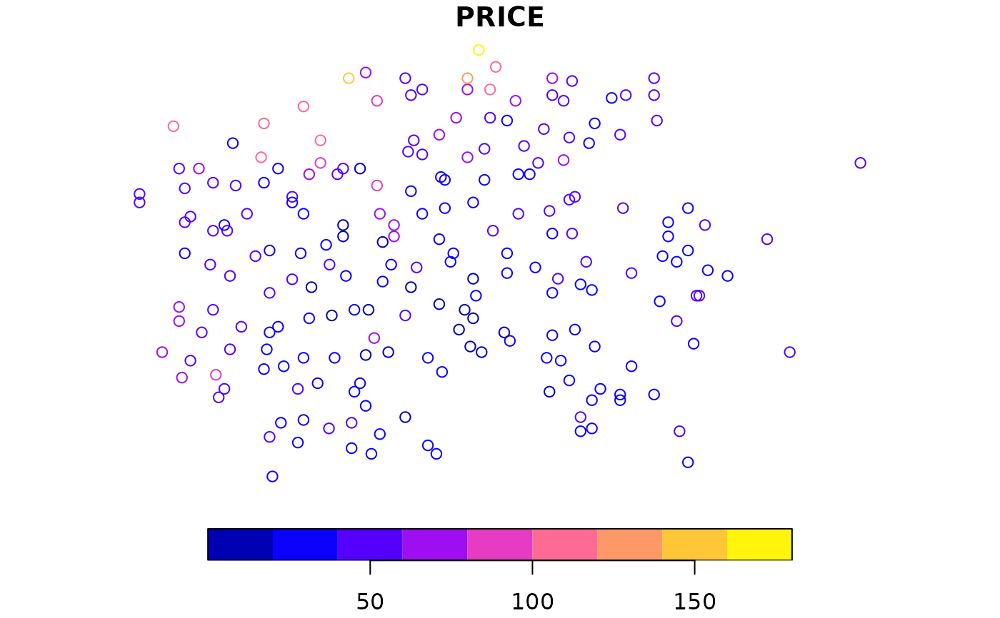

House sales price and characteristics for a spatial hedonic regression, Baltimore, MD 1978. X,Y on Maryland grid, projection type unknown.
baltimoreA data frame with 211 observations on the following 17 variables.
STATION: a numeric vector
PRICE: a numeric vector
NROOM: a numeric vector
DWELL: a numeric vector
NBATH: a numeric vector
PATIO: a numeric vector
FIREPL: a numeric vector
AC: a numeric vector
BMENT: a numeric vector
NSTOR: a numeric vector
GAR: a numeric vector
AGE: a numeric vector
CITCOU: a numeric vector
LOTSZ: a numeric vector
SQFT: a numeric vector
X: a numeric vector
Y: a numeric vector
Prepared by Luc Anselin. Original data made available by Robin Dubin, Weatherhead School of Management, Case Western Research University, Cleveland, OH. http://sal.agecon.uiuc.edu/datasets/baltimore.zip
Dubin, Robin A. (1992). Spatial autocorrelation and neighborhood quality. Regional Science and Urban Economics 22(3), 433-452.
data(baltimore)
str(baltimore)
#> 'data.frame': 211 obs. of 17 variables:
#> $ STATION: int 1 2 3 4 5 6 7 8 9 10 ...
#> $ PRICE : num 47 113 165 104.3 62.5 ...
#> $ NROOM : num 4 7 7 7 7 6 6 8 6 7 ...
#> $ DWELL : num 0 1 1 1 1 1 1 1 1 1 ...
#> $ NBATH : num 1 2.5 2.5 2.5 1.5 2.5 2.5 1.5 1 2.5 ...
#> $ PATIO : num 0 1 1 1 1 1 1 1 1 1 ...
#> $ FIREPL : num 0 1 1 1 1 1 1 0 1 1 ...
#> $ AC : num 0 1 0 1 0 0 1 0 1 1 ...
#> $ BMENT : num 2 2 3 2 2 3 3 0 3 3 ...
#> $ NSTOR : num 3 2 2 2 2 3 1 3 2 2 ...
#> $ GAR : num 0 2 2 2 0 1 2 0 0 2 ...
#> $ AGE : num 148 9 23 5 19 20 20 22 22 4 ...
#> $ CITCOU : num 0 1 1 1 1 1 1 1 1 1 ...
#> $ LOTSZ : num 5.7 279.5 70.6 174.6 107.8 ...
#> $ SQFT : num 11.2 28.9 30.6 26.1 22 ...
#> $ X : num 907 922 920 923 918 900 918 907 918 897 ...
#> $ Y : num 534 574 581 578 574 577 576 576 562 576 ...
if (requireNamespace("sf", quietly = TRUE)) {
library(sf)
baltimore_sf <- baltimore %>% st_as_sf(., coords = c("X","Y"))
plot(baltimore_sf["PRICE"])
}
